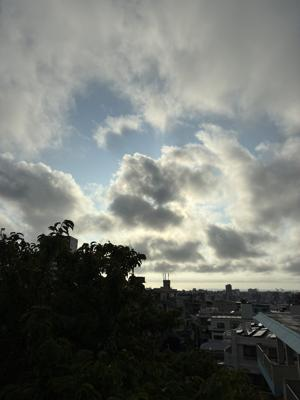
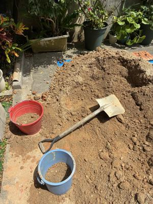
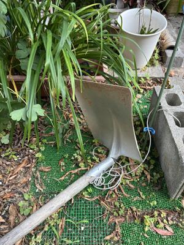
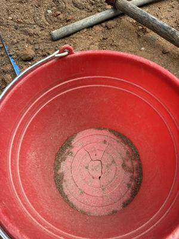
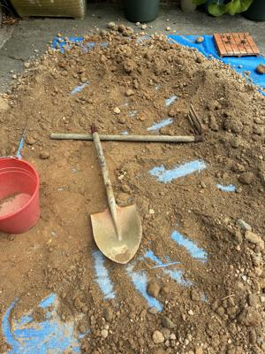
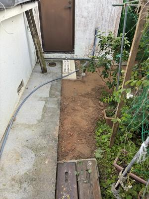
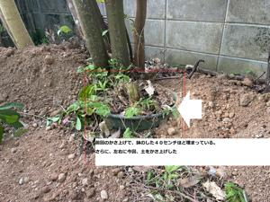

うるがいの話 ある日
最新: 地盤のかさ上げ【うるがいの話 ある日】とは 一日だけのプログです
『うるがいの話』の最新一日だけのプログで、通信料が少なく経済的だ。カニの画像をクリックすると全ての日付が載る『うるがいの話』サイトを表示します
|
|
【うるがいの話】 うるがい(ｳﾙｶﾞｲ urugai)とは、『もずくがに』の名前でとても大きくなります。 |
|---|---|
|
|
【カミマヤーの話】 猫のことを方言でマヤーといいます。カミマヤー（kamimayaa）とは、神の猫のことです。 |
|
【たながぁの音楽】 たながぁ（ﾀﾅｶﾞｰ tanagaa）とは手長えびのことで、何種類かあり大きいのは車 エビぐらいになります。 |

|
【ぶながぁの話】 ぶながぁ(ﾌﾞﾅｶﾞｰ bunagaa)とは、赤い髪の毛、赤い身体、そして身長は１ｍ２０ｃｍ ぐらい、川の蟹を食べているの目撃された。場所は沖縄県国頭郡大宜味村のと ある村僕の隣近所に住んでいる爺さんから、聞いた話です。 |
|
|
【ギーマの話】 ギーマ(giima)とは、山原の里山に咲くスズランに似た、 花を付けます。実は食べられます、 気が付くと口の周りが紫になっています。 |
2026年05月22日 (金）地盤のかさ上げ
15:10

あれ！、筋肉痛や腰痛が無い。ホー、驚く。昨日の夜は、右足が
痙攣、右親指も痙攣してたのに。フムフム、これは日頃の鍛錬が
効いたのか。体重が２キログラム落ちました、夜の血圧測定では
上下、１０以上も下がっていた。
作業して２時間経った、スコップはまだ健在でした。当初は２時
間で終わるかとあまい考えでした。

１５時３０分、スコップの折れました。もう、使い物にならない
メイクマンへ行くか、いや、時間がない。取っ手が無くなった壊
れた古いスコップを使って作業を続ける

バケツの底も、割れていた。でも、最後まで使いました。

１６時５４分 ４時間過ぎましたが・・・、へばりそうになりま
した。まるでナハマラソンの３０キロ地点です。休憩を長らくと
る。

１７時２７分 かさ上げ終了、裏庭の一部です

その昔、かさ上げしたときに６０センチほどの鉢の４０センチ程
が、土に埋もれてしまい、鉢は取れなくなりました。今回はさら
に、左右に土をかさ上げしています。

もう、裏庭庭には土のかさ上げは要らないと思う。今日は、朝か
ら雨、1日ずれたら。